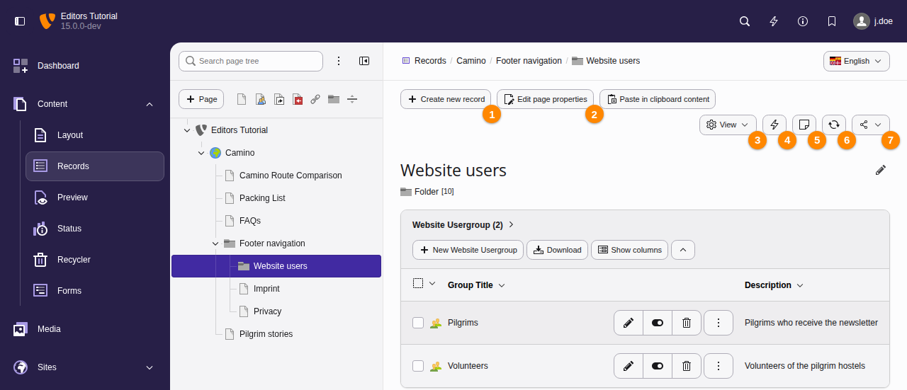
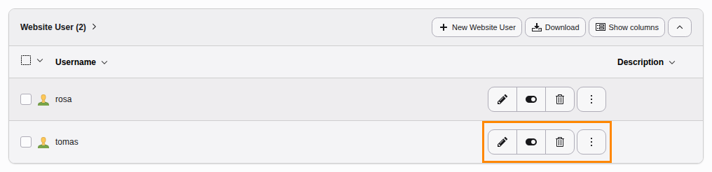
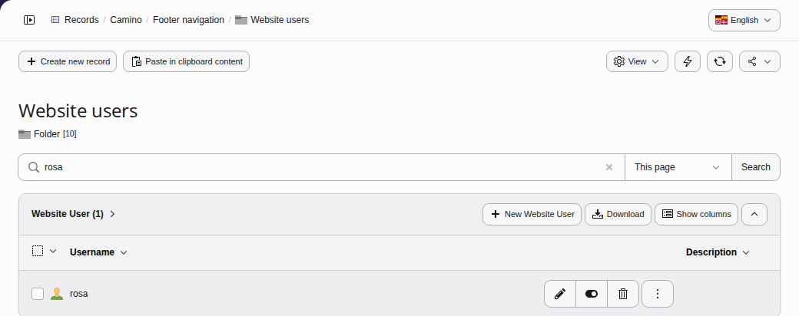
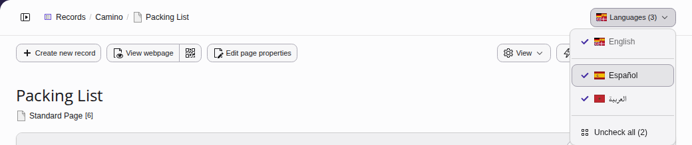
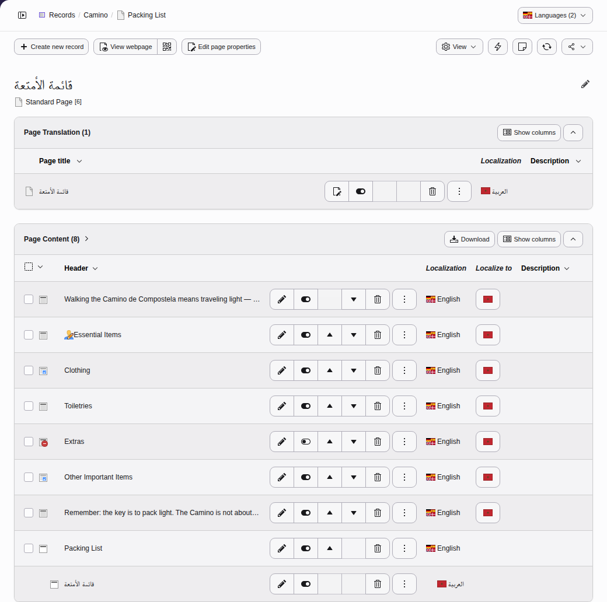

Using the Records module
Changed in version 14.0 Feature: #107628 - Improved backend module naming and structure
This module has been renamed from Web > List to Content > Records.
The Content > Records module allows you to browse through pages and folders in your site and view the records that are stored there. You can also create and edit records.
Select the Content > Records module and choose a page or storage folder.
Table of Contents
The Records module header

See below about the meaning of the labeled buttons
The list view displays a list of records stored on the current page, grouped by type. The Content > Records module is commonly used for records that have no dedicated backend module, for example website users and groups.
The list view has action icons in the module header including:
- Create new record (a wizard appears to let you choose which type)
- Edit page properties of the current page
- View or hide search or the clipboard
- Clear the cache of the current page
- Create internal note
- Refresh the Content > Records module
- Share Copy an URL to this page or bookmark it for quick access
Tip
Use the Create new record button if you want to create a record of a type that does not yet have items on the current page.
Editing a record of a certain type
If there are already database records stored on the current page, each record type features its own action buttons for available actions:

In this example the first button can be used to edit the user group, the second button to hide or unhide it, the third button to delete it. The button with the three dots offers additional options.
Tip
You can also edit a database record by clicking on its title.
Finding a record in a long list
If there are a large number of records you can use the search box to search for a record containing a certain word.

To make the search box visible, Select "Show Search" from the "View" dropdown.
It is also possible to include subpages of the current page by choosing the number of levels (for performance reasons) in which to search.
If you do not know on which page the record could be found you can also use the Backend search.
The search can be opened by selecting the magnifying glass in the top right corner of the toolbar or by pressing the Cmd + K keystroke on MacOS or the Ctrl + K keystroke on Windows and Linux systems.
Showing the records of certain languages
New in version 14.0 Feature: #103258 - Language filter for list module
On a page with translations, the Content > Records module lists the records of the languages that you choose in its language menu. The button of the menu, at the top right of the module, shows how many languages the record list shows.

The language menu of a page in three languages
- Open the language menu. The languages with a check mark are the ones that the record list shows.
- Click a language to show or hide its records.
- Click Check all to show the records of all languages, or Uncheck all to show the default language only.
The records of the default language always stay in the record list, as well as records that apply to all languages. Their translations show below them.

Without Español, the record list shows the English records and the Arabic ones
TYPO3 remembers the languages that you have chosen for each page. The Content > Layout module shows the same languages on that page.
On a page without a translation, the language menu offers to create one under Create new translation, see Create the page translation.